[!NOTE] work in progress
with the help of Gemini pro 2.5
Integrate Ansible Platform with AI and EDA
Red Hat publishes an AI-powered AAP solution with Service Now.
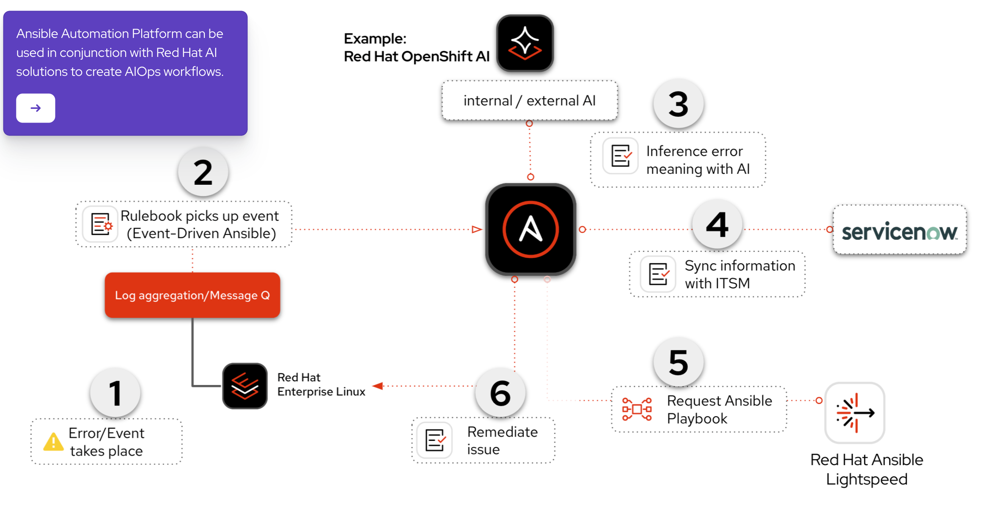
source:
- https://labs.demoredhat.com/
- https://interact.redhat.com/share/kCuEEAIeU2a8plQcDALz
We will try to implement the pattern, and improve it to fit our needs. Our proposed end-to-end solution will be implemented in a phased approach:
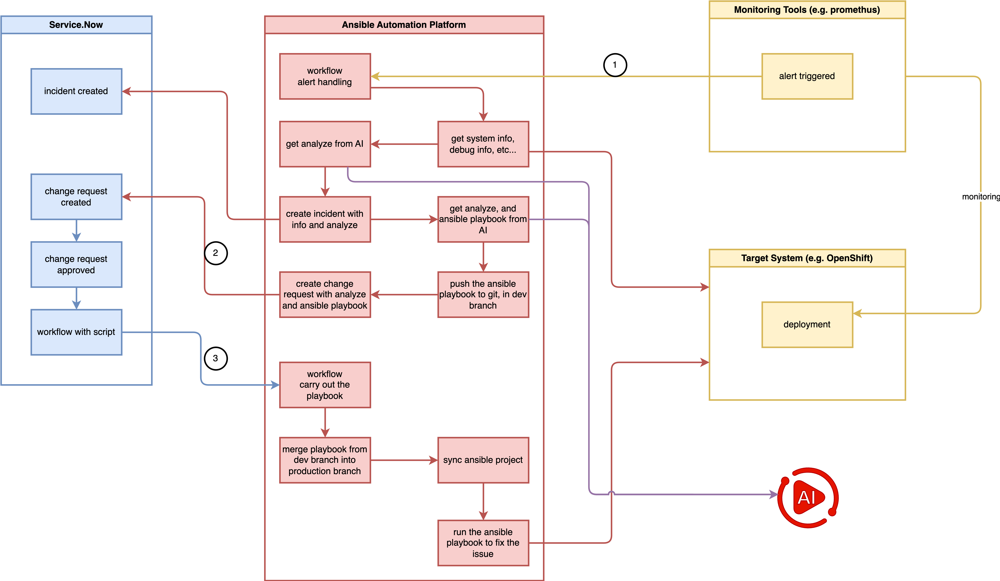
testing service.now call aap webhook
Key points:
- change request trigger workflow (in service now)
- workflow approval (in service.now)
- call aap workflow webhook (from service.now to aap)
- pass parameter from service.now to aap workflow
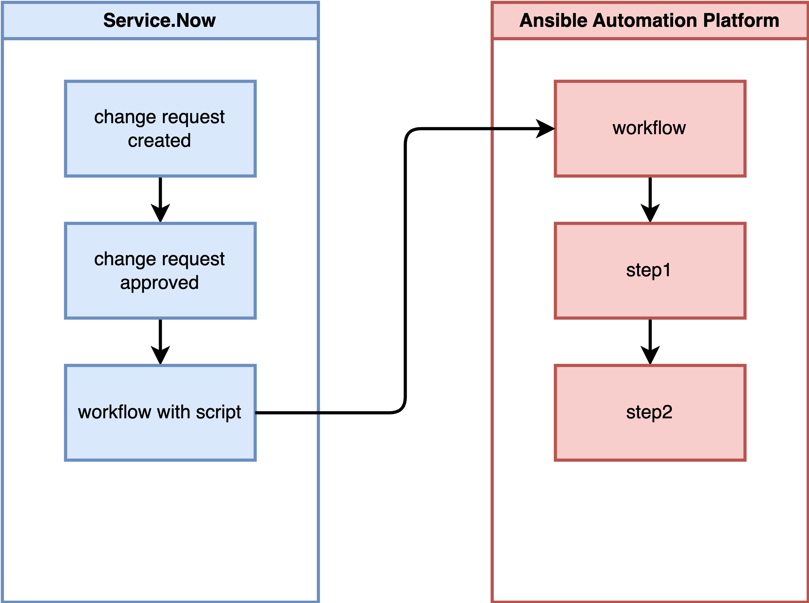
overall process:
- On Service Now, define a workflow that, upon detecting an approved change request, remotely invokes a workflow template on AAP, passing a parameter named ‘playbook to run’.
- On AAP, define a workflow:
- Step 1: Run project-a’s playbook, outputting the message “step1 ok”.
- Step 2: Resync project-b.
- Step 3: Run project-b’s playbook based on the workflow’s parameter ‘playbook to run’, outputting the message “step3 ok”.
Official Ways
There are official ways to make webhook calls from Service Now to AAP, but they cannot be activated in the developer version of ServiceNow.
- https://store.servicenow.com/store/apps?q=ansible
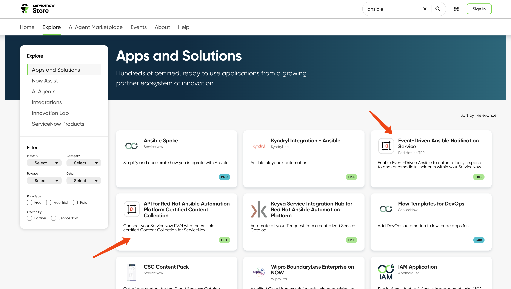
We will find a workaround for our demo.
workflow webhook setting in aap
We define a workflow in AAP and enable the
webhook with type gitlab. Note down
the webhook url and webhook key.
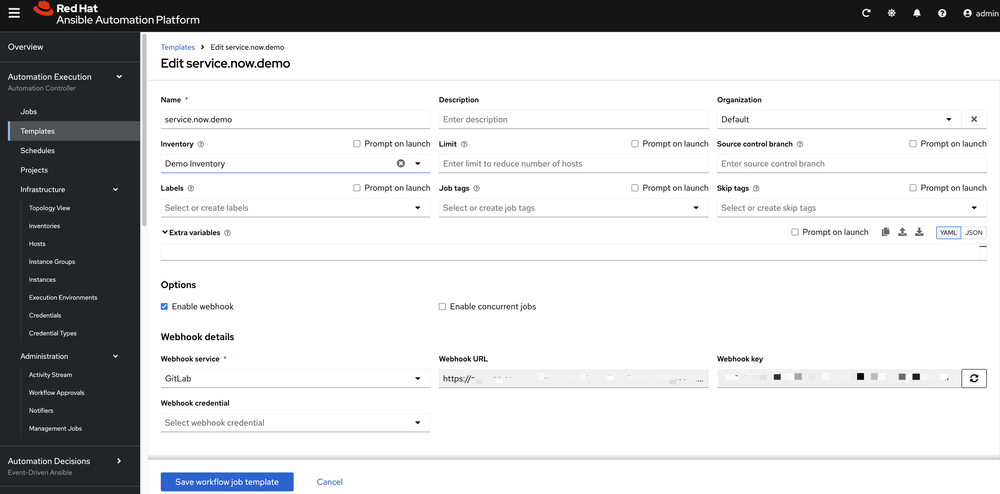
Then we define the workflow with two steps, both being very simple Ansible playbooks. We will use this pattern for later advanced logic.
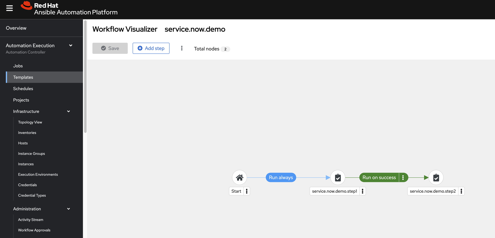
The Ansible source code:
- https://github.com/wangzheng422/ansible.service.now/blob/main/job.template/debug_message_step_01.yml
- https://github.com/wangzheng422/ansible.service.now/blob/main/job.template/debug_message_step_02.yml
The key point of the source code is how it gets extra
variables from Service Now:
vars:
playbook_to_run: "{{ awx_webhook_payload.gitlab_payload.playbook_to_run | default('default_playbook_value') }}"We have a webhook, and we test it with a curl
command. Through the curl command, we can obtain
the payload and headers required for the webhook call.
[!NOTE] change the project.id to correct aap project.
VAR_SHA=`date +"%Y-%m-%d %H:%M:%S"`
# change the project.id to correct aap project
cat << EOF > payload.json
{
"ref": "refs/heads/main",
"user_name": "Curl Manual Tester",
"project": {
"id": 41,
"name": "service.now.demo.project",
"web_url": "https://aap-aap.apps.cluster-snw5f-1.dynamic.redhatworkshops.io/execution/projects/41/details"
},
"commits": [
{
"id": "b6568db1bc1dcd7f8b4d5a946b0b91f9dacd7327",
"message": "This is a test commit sent directly via curl.",
"timestamp": "$VAR_SHA",
"author": {
"name": "Curl Tester",
"email": "tester@example.com"
}
}
],
"gitlab_payload": {
"playbook_to_run": "job.template/wzh-dummy.test.yml"
}
}
EOF
curl -X POST \
-H "Content-Type: application/json" \
-H "X-Gitlab-Token: $AAP_WEBHOOK_KEY" \
-H "X-Gitlab-Event: Push Hook" \
-d '@payload.json' \
"$AAP_WEBHOOK_URL"
# output should be:
# {"message":"Job queued."}REST Message Setting in Service Now
The AAP webhook is working. Next, we will define a workflow in Service Now that monitors change request approvals and triggers the AAP workflow with parameters.
First, we define an outbound REST message:
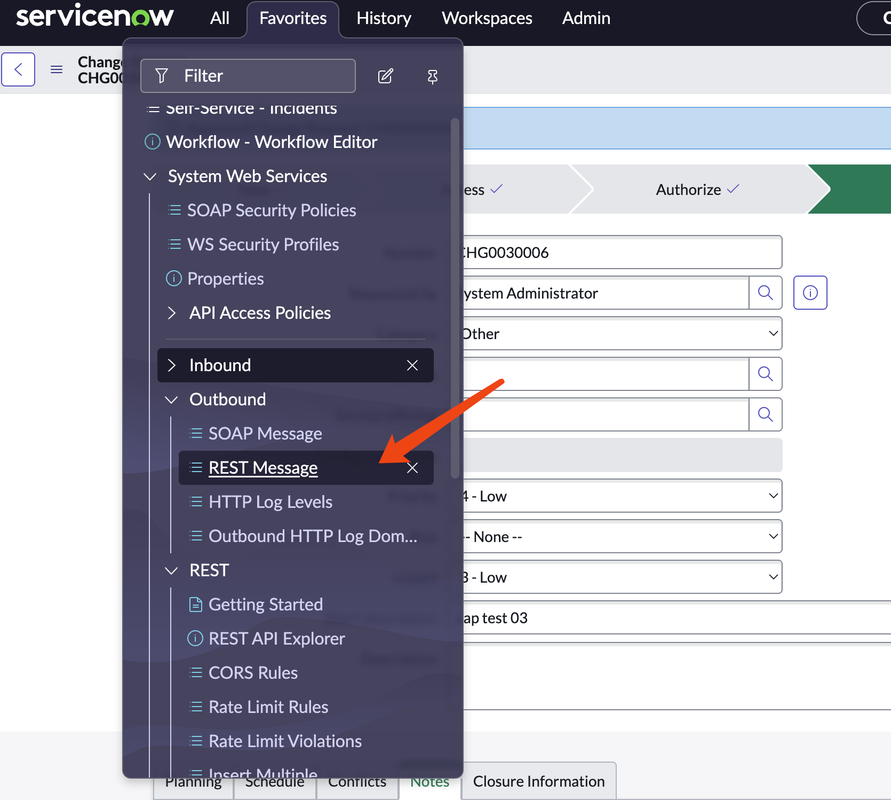
Click new
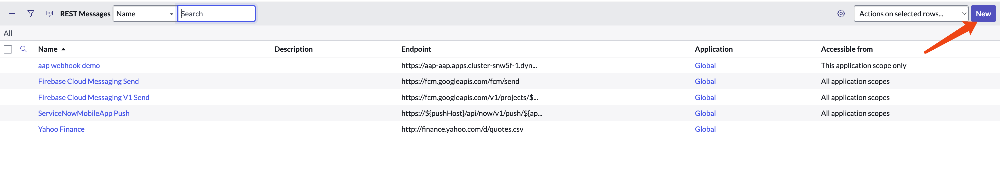
Give it a name like aap webhook demo, provide
the webhook URL, and define the POST method.
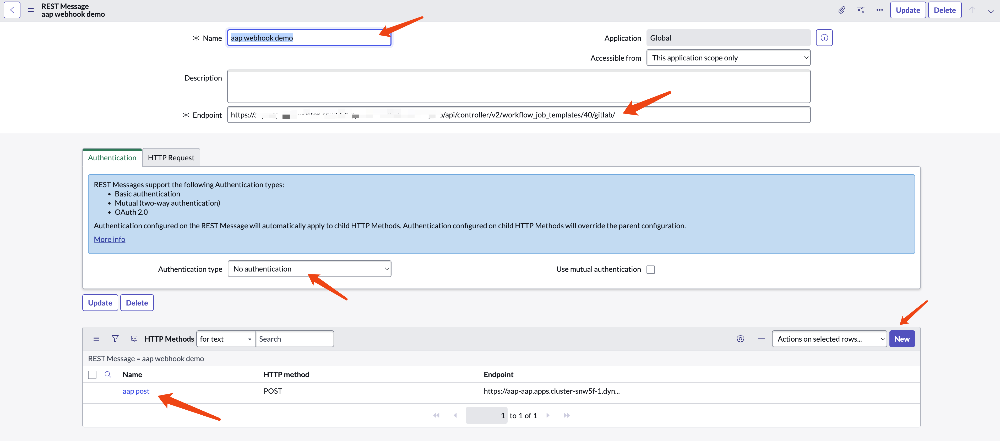
For the POST method, provide a name, webhook
URL, headers, and payload content. The payload content will
serve as a template for later use.
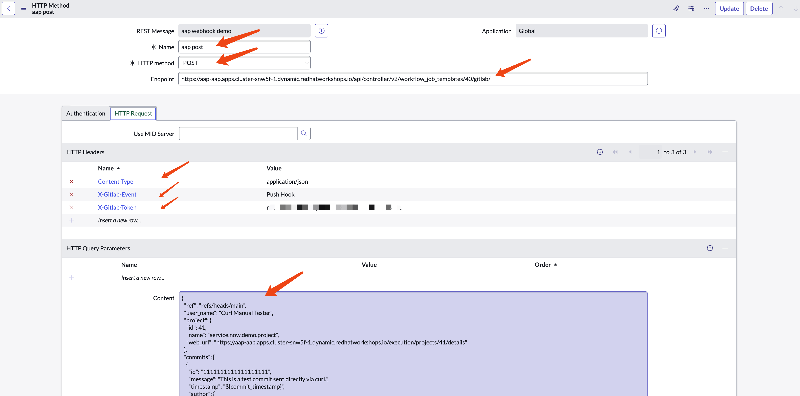
Use the payload content below as an example. Change the
project.id to your project ID.
{
"ref": "refs/heads/main",
"user_name": "Curl Manual Tester",
"project": {
"id": 41,
"name": "service.now.demo.project",
"web_url": "https://example.com/execution/projects/41/details"
},
"commits": [
{
"id": "1111111111111111111",
"message": "This is a test commit sent directly via curl.",
"timestamp": "${commit_timestamp}",
"author": {
"name": "Curl Tester",
"email": "tester@example.com"
}
}
],
"gitlab_payload": {
"playbook_to_run": "${playbook_to_run}"
}
}The ${commit_timestamp} and
${playbook_to_run} are variables that can be
defined and replaced during the workflow in Service Now.
Workflow Setting in Service Now
Now we define a workflow to use the REST message.
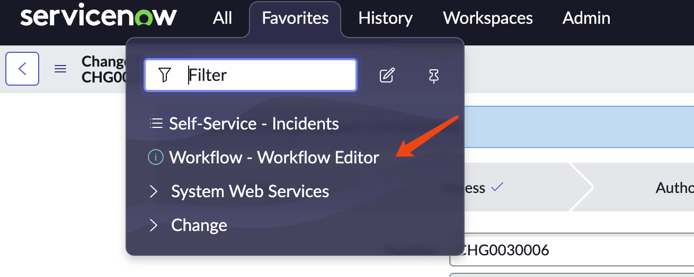
Create new workflow
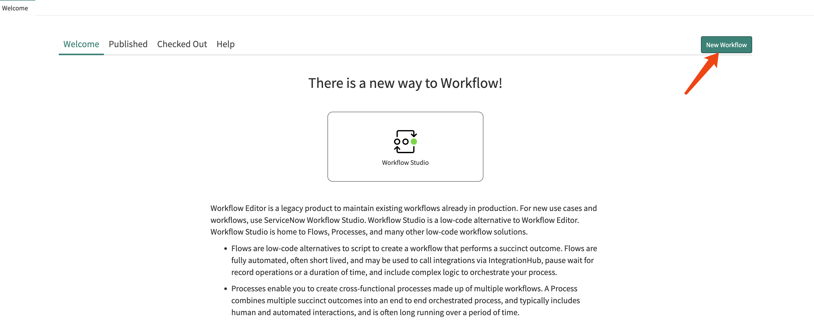
Give the workflow a name and configure it to
monitor the change request table.
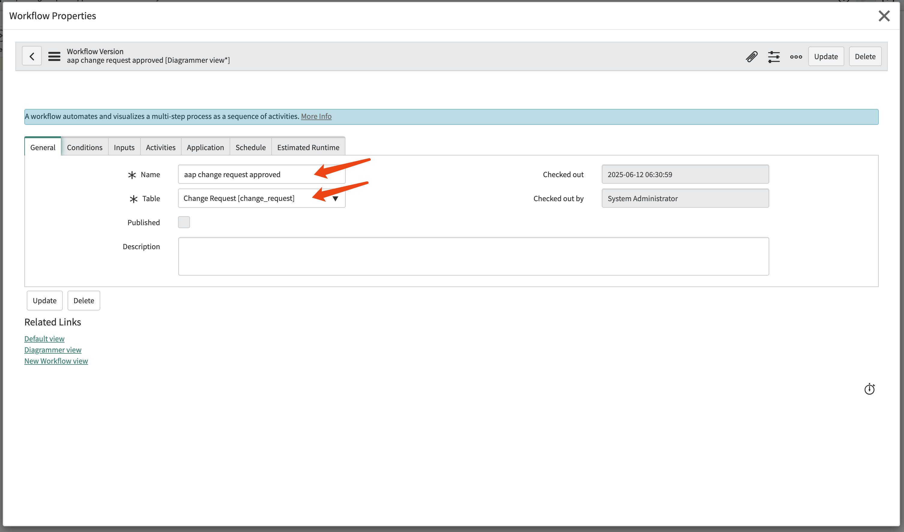
Configure the workflow to run always, with the
condition that the approval is
approved.
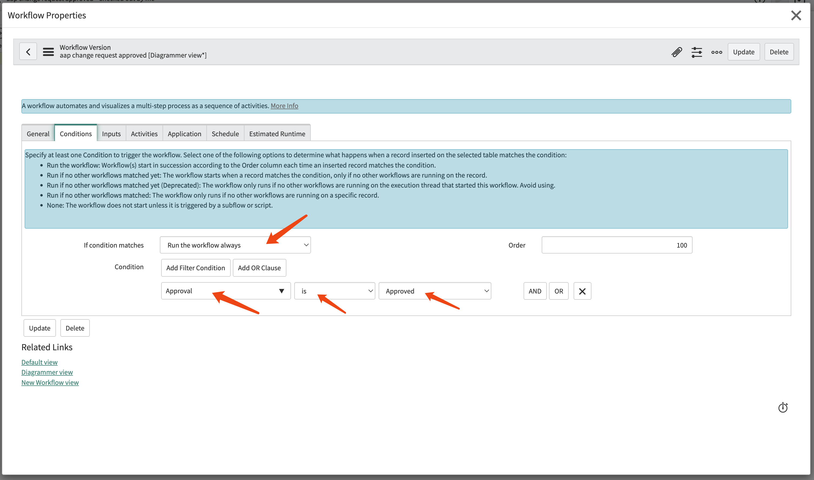
In the workflow, add a step run script
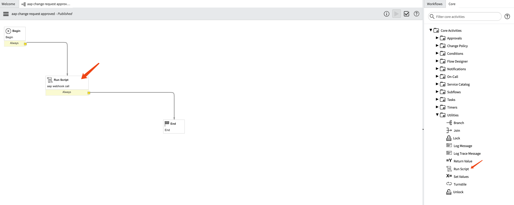
Give the run script step a name and set the
script content.
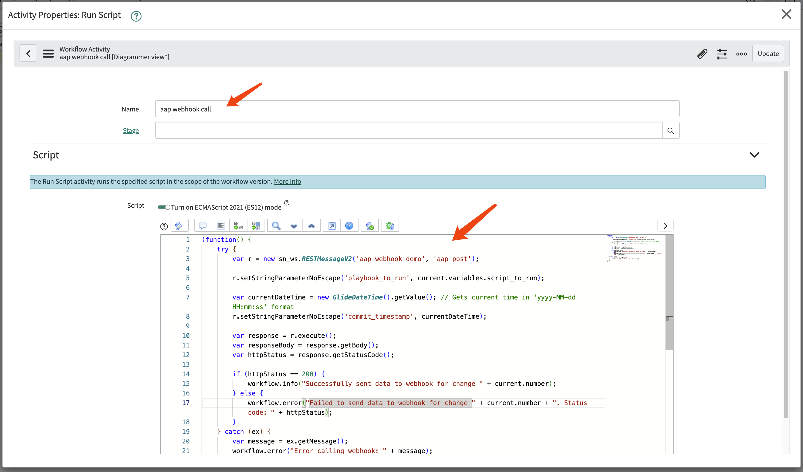
For the source code, you can use the following as an example.
(function() {
/**
* This function parses the playbook path from work notes.
* It searches for the keyword "playbook_to_run:" line by line, starting from the latest log entry.
* @returns {string|null} - The playbook path if found; otherwise, null.
*/
function getPlaybookFromWorkNotes() {
// Get all work note entries; -1 means get all. Returns a long string with entries separated by \n\n.
var workNotes = current.work_notes.getJournalEntry(-1);
// Split log content by line
var lines = workNotes.split('\n');
// Iterate through lines, starting from the latest log
for (var i = 0; i < lines.length; i++) {
var currentLine = lines[i].trim(); // Trim whitespace from line ends
// Check if the current line starts with "playbook_to_run:" (case-insensitive)
if (currentLine.toLowerCase().startsWith('playbook_to_run:')) {
// Keyword found, now extract the value after the colon
var parts = currentLine.split(':');
// Remove the first part (i.e., the keyword "playbook_to_run"), then recombine the remaining parts
// This is done to prevent the playbook path itself from containing colons
parts.shift();
var playbookPath = parts.join(':').trim(); // Recombine and trim whitespace
// Ensure the extracted path is not empty
if (playbookPath) {
workflow.info("Playbook found in Work Notes: " + playbookPath);
return playbookPath; // Return the found path
}
}
}
// If not found after iterating through all lines, return null
workflow.warn("Keyword 'playbook_to_run:' not found in Work Notes.");
return null;
}
// --- Main execution logic ---
var playbookToRun = getPlaybookFromWorkNotes();
// Only execute the Webhook call if the playbook path is successfully extracted
if (playbookToRun) {
try {
var r = new sn_ws.RESTMessageV2('aap webhook demo', 'aap post');
// r.setStringParameterNoEscape('playbook_to_run', current.variables.script_to_run);
var currentDateTime = new GlideDateTime().getValue(); // Gets current time in 'yyyy-MM-dd HH:mm:ss' format
r.setStringParameterNoEscape('commit_timestamp', currentDateTime);
// Key: Use the playbook path extracted from Work Notes as the value for the 'playbook_to_run' parameter
r.setStringParameterNoEscape('playbook_to_run', playbookToRun);
// In your REST Message, you also need the ${commit_timestamp} variable
r.setStringParameterNoEscape('commit_timestamp', new GlideDateTime().getValue());
var response = r.execute();
var httpStatus = response.getStatusCode();
if (httpStatus == 200) {
workflow.info("Successfully sent data to Webhook, Playbook: " + playbookToRun);
} else {
workflow.error("Failed to send data to Webhook. Status code: " + httpStatus);
}
} catch (ex) {
var message = ex.getMessage();
workflow.error("An exception occurred while calling the Webhook: " + message);
}
} else {
// If no playbook is found, define appropriate handling logic here, e.g., end workflow or set status
workflow.info("Webhook call skipped because no playbook was found in Work Notes.");
}
})();testing
We have defined the workflow in Service Now, and now we can test it.
Create a new change request.
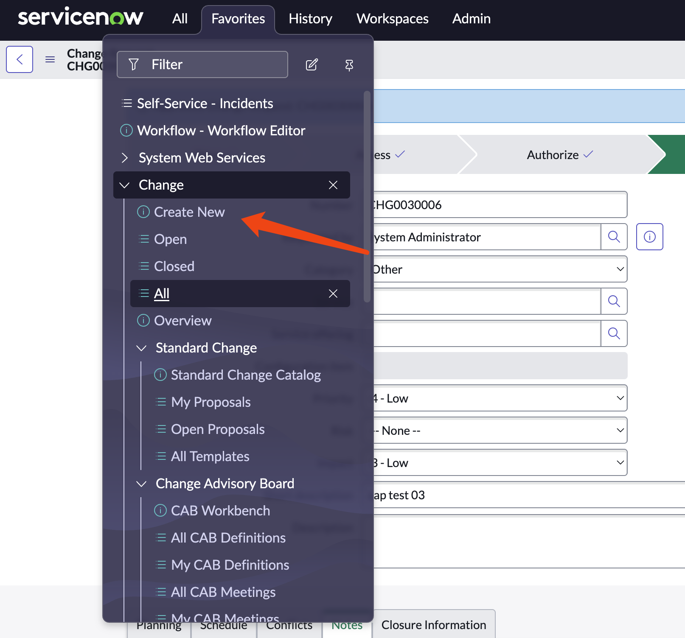
Select a type of change request.
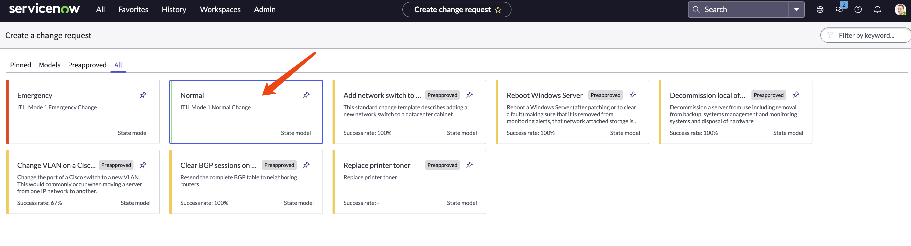
Give it a name and add work notes, for example:
playbook_to_run: 3344/5566.yml
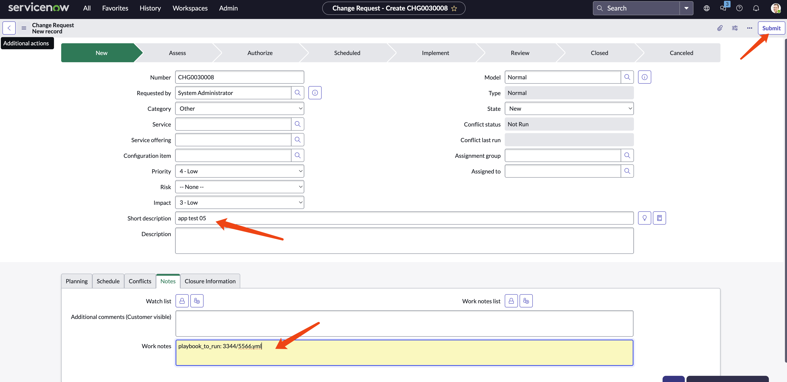
Find the change request created and open it.
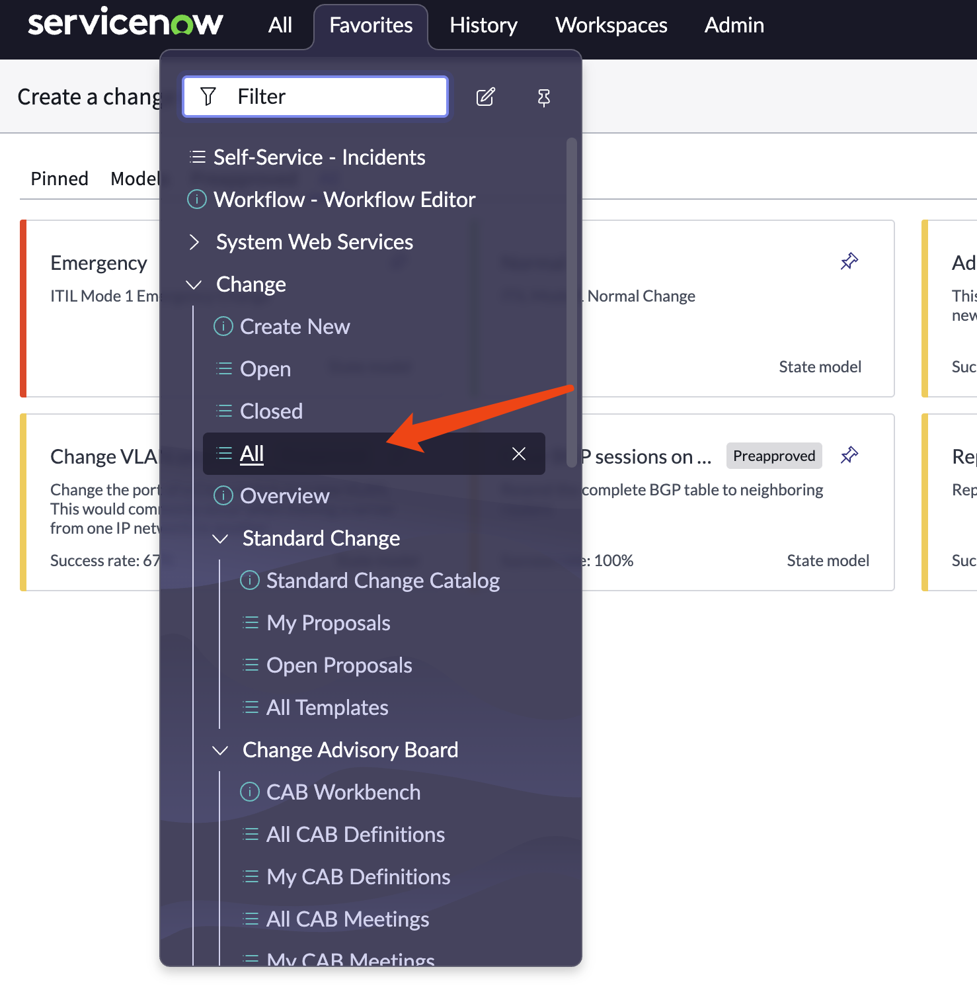
Click on the change request.
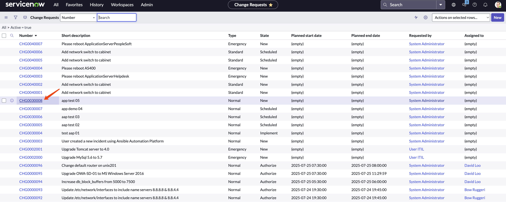
Assign to a group, and click
request approval
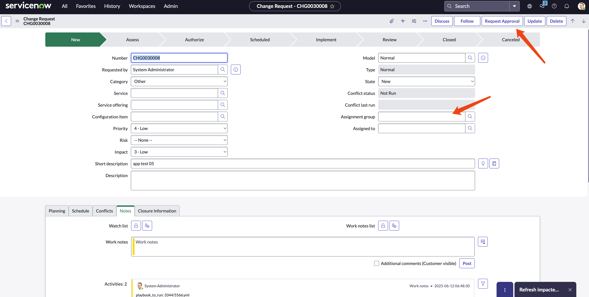
For testing, as an administrator, we can select a user to approve it.
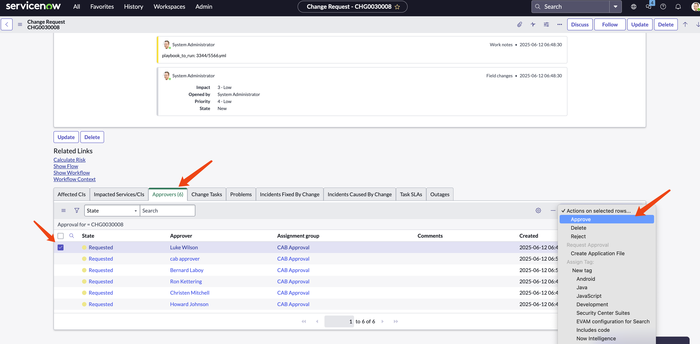
The webhook is triggered, and we can see the webhook details in AAP, including the received parameter.
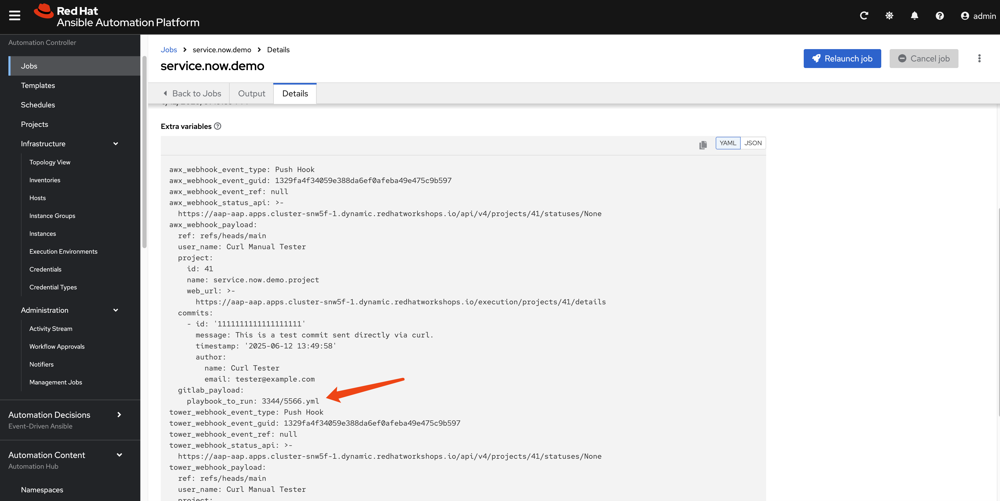
The workflow runs smoothly.
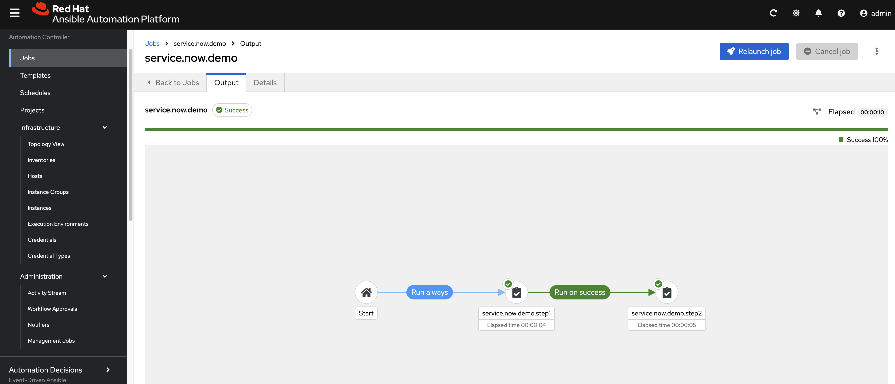
Using Rulebook to Trigger Service Now Incident and Change Request Creation
Now, we will test the EDA scenario. We will create a rulebook and trigger a workflow to create something in Service Now.
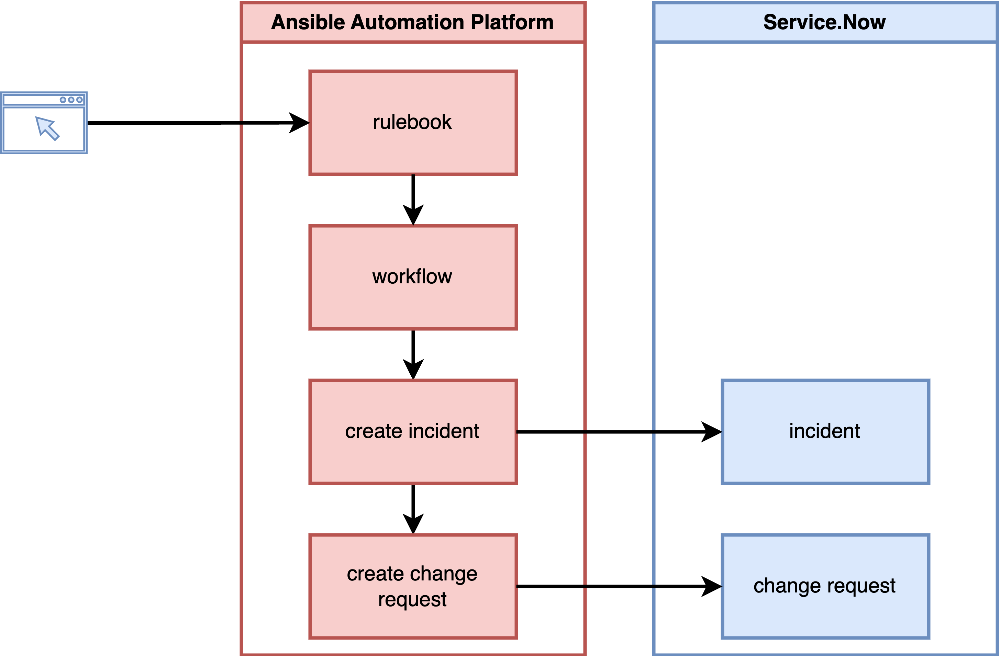
Set AAP credentials for the rulebook in AAP, so it can trigger workflows.
- url: ( example ) https://aap.vs8jnfklf8fl.instruqt.io/api/controller/
- user: (AAP user name)
- password: (AAP password)
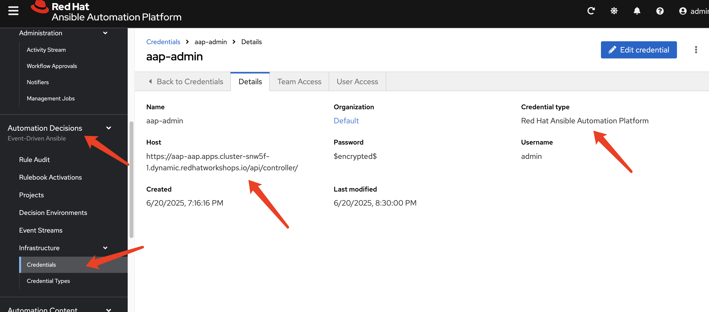
solution involved:
- rulebook, will trigger workflow.
- workflow
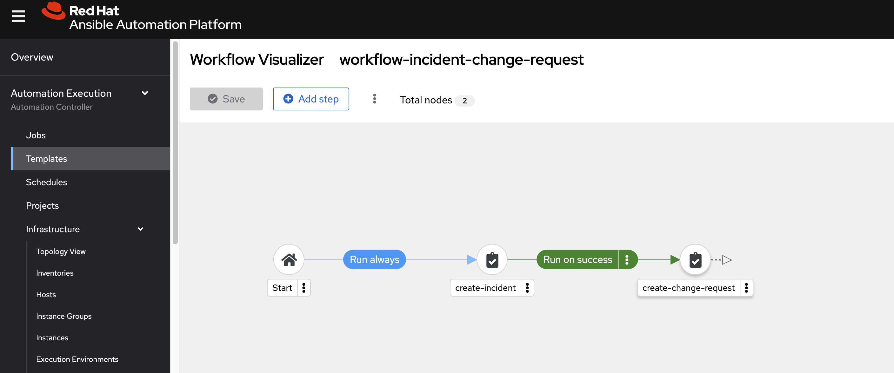
Git Repository Operations
In our proposed solution, we will store the GenAI-created playbook in a Git repository with a new branch. After approval, we will merge it back and run it. Now, we will test this part. We will run the playbook directly in an Ansible job instance and store the log in the Git repository as well. Another approach is to create a new Ansible job template using the GenAI playbook and launch a new job for the created job template; we will test this approach later.
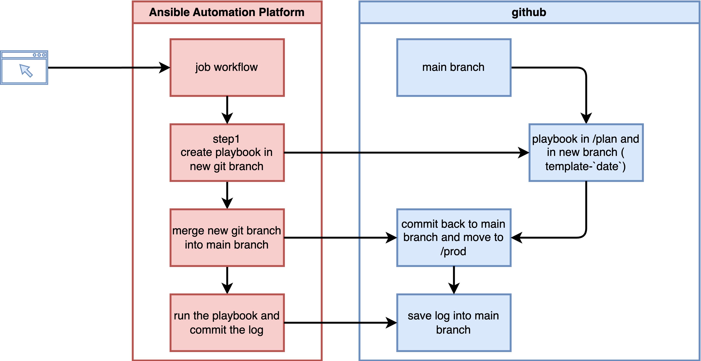
solution includes Ansible playbooks
- https://github.com/wangzheng422/ansible.service.now/blob/main/job.template/deploy-step-01-template-to-plan.yml
- https://github.com/wangzheng422/ansible.service.now/blob/main/job.template/deploy-step-02-plan-to-prod.yml
- https://github.com/wangzheng422/ansible.service.now/blob/main/job.template/deploy-step-03-run-prod-script.yml
Create credential type for GitHub access.
---
# Credential Type Name: WZH GitHub Personal Access Token
# Description: Used for authenticating with the GitHub API using a PAT.
# Part 1: Input Configuration
# This defines the form the user fills out in the AAP UI.
#
input:
fields:
- id: token
label: Token
type: string
secret: true
help_text: "The Personal Access Token from your GitHub account."
multiline: false
required:
- token
# Part 2: Injector Configuration
# This defines how the 'token' field above is made available
# to the running playbook.
#
injector:
# It injects the token as an environment variable.
env:
GITHUB_TOKEN: "{{ token }}"And create credential.
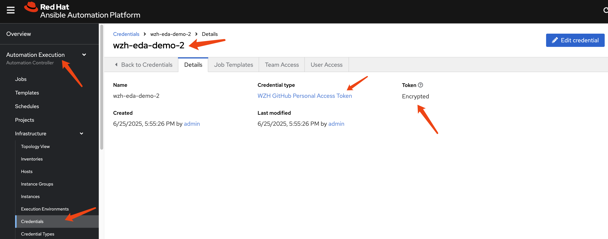
Create job template for the Ansible playbook
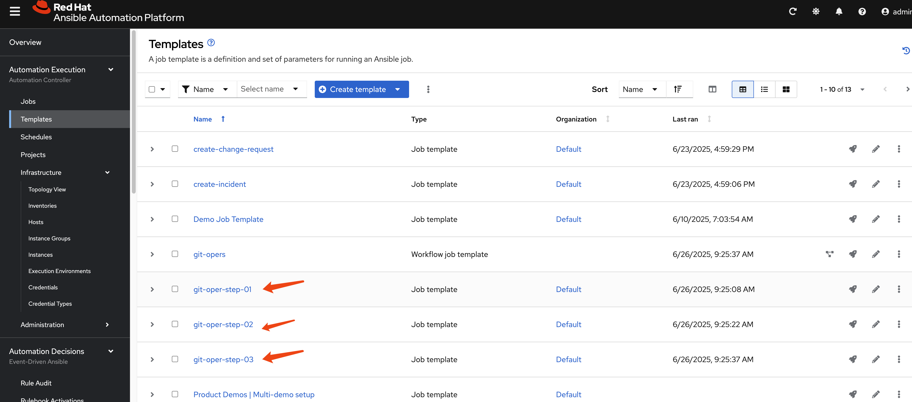
The job template needs extra var and a
credential with prompt on launch.
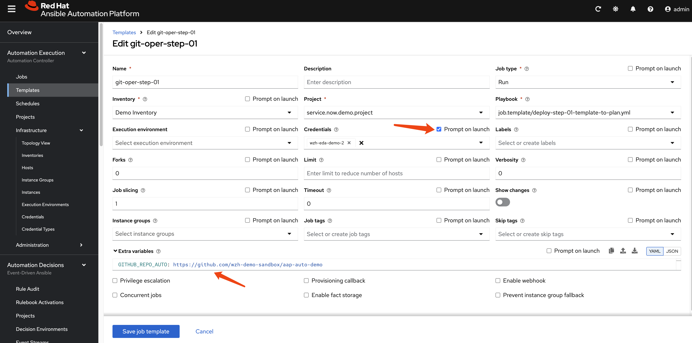
Define a workflow template.
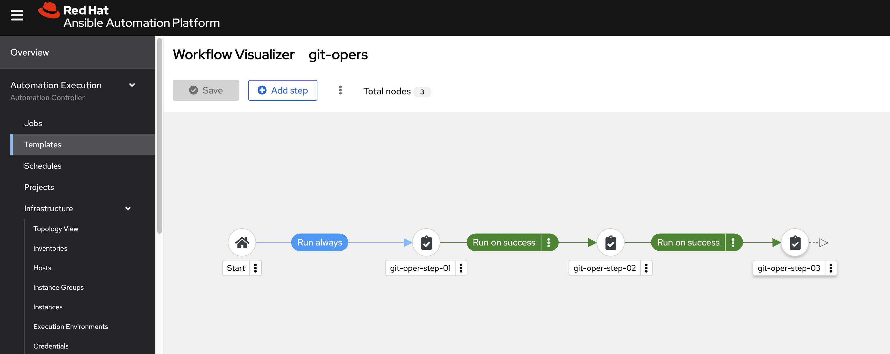
Run the workflow, and it runs successfully.
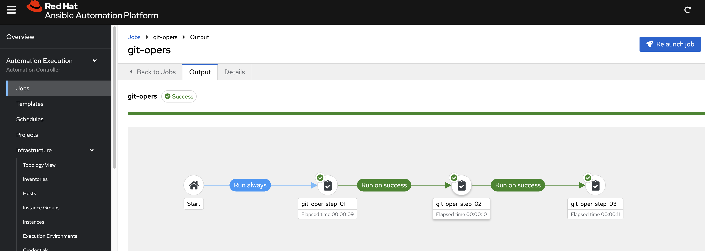
We can see in the target ansible repo, new ansible-playbook created, and the log of the job is also saved.
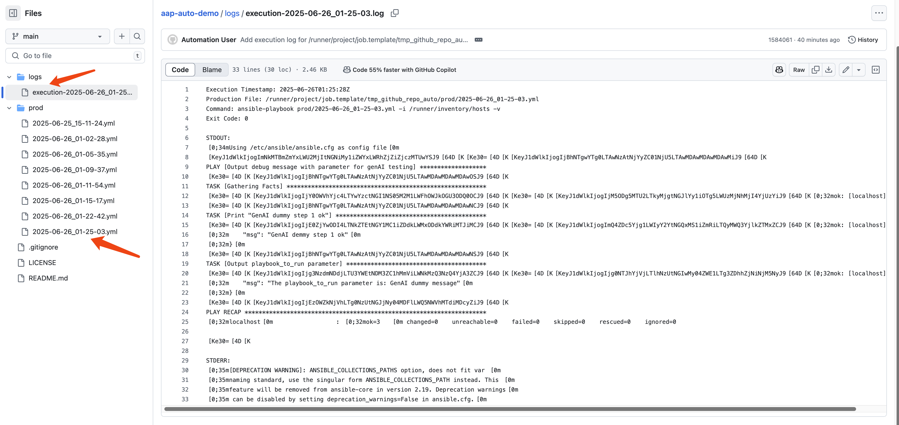
GenAI (DeepSeek) to Generate a New Ansible Playbook
We will call DeepSeek (through OpenAI API) to generate a new Ansible playbook to fix the problem.
The demo code is here:
- https://github.com/wangzheng422/ansible.service.now/blob/main/job.template/deepseek_simulate_prometheus_alert.yml
Create credential type for DeepSeek (OpenAI API spec)
---
# Credential Type Name: WZH GenAI Access Token
# Description: Used for authenticating with the GenAI API using a PAT.
# Part 1: Input Configuration
# This defines the form the user fills out in the AAP UI.
#
input:
fields:
- id: token
label: Token
type: string
secret: true
help_text: "The Personal Access Token from your GenAI account."
multiline: false
- id: api_url
label: URL
type: string
secret: false
help_text: "The URL of the GenAI API endpoint."
multiline: false
- id: model_name
label: Model Name
type: string
secret: false
help_text: "The name of the GenAI model to use."
multiline: false
required:
- token
- api_url
- model_name
# Part 2: Injector Configuration
# This defines how the 'token' field above is made available
# to the running playbook.
#
injector:
# It injects the token as an environment variable.
env:
GENAI_TOKEN: "{{ token }}"
GENAI_API_URL: "{{ api_url }}"
GENAI_MODEL_NAME: "{{ model_name }}"And the prompt we used in the Ansible playbook
- name: Construct prompt for DeepSeek AI
ansible.builtin.set_fact:
deepseek_prompt: |
You are an expert in Ansible. Based on the following Prometheus alert, generate an Ansible playbook to fix the described problem.
The playbook should be self-contained and executable.
Prometheus Alert Summary: {{ alert_summary }}
Prometheus Alert Description: {{ alert_description }}
Affected Instance: {{ alert_instance }}
Please provide only the YAML content of the Ansible playbook, without any additional text or markdown formatting outside the YAML.